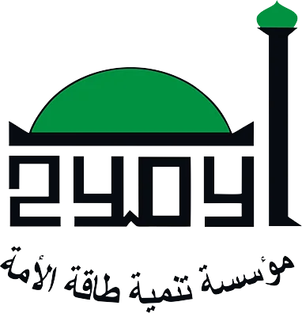

CBT Ujian Sekolah
MTs Terpadu Al Ishlah Gorontalo
Asesmen Sumatif Akhir Semester (SAS)
•
IPA Terpadu VII
DOA SEBELUM UJIAN
رَبِّ اشْرَحْ لِي صَدْرِي وَيَسِّرْ لِي أَمْرِي وَاحْلُلْ عُقْدَةً مِنْ لِسَانِي يَفْقَهُوا قَوْلِي
"Ya Rabbku, lapangkanlah untukku dadaku, mudahkanlah untukku urusanku, dan lepaskanlah kekakuan dari lidahku, supaya mereka mengerti perkataanku." (QS. Thaha: 25–28)
Nama Peserta:
-
Kelas / Mata Pelajaran:
-
Alokasi Waktu & Soal:
120 Menit • 25 Soal (15 PG, 5 B/S, 5 Uraian)
⚠️ Tata Tertib & Keamanan Ujian (Anti-Cheat)
- Ujian berjalan otomatis dalam mode Layar Penuh (Fullscreen) selama 120 menit.
- Dilarang membuka tab baru, berpindah aplikasi, keluar layar penuh, atau mengambil tangkapan layar (screenshot).
- Setiap pelanggaran tercatat otomatis. Jika pelanggaran melebihi 5 kali (> 5), aplikasi akan TERKUNCI OTOMATIS dan peserta dinyatakan DIDISKUALIFIKASI (Nilai 0).
- Untuk soal Uraian (Nomor 21–25), tuliskan jawaban secara rapi pada Lembar Jawaban Kertas yang dibagikan pengawas.
© 2026 Tim IPA Terpadu MTsT Al Ishlah